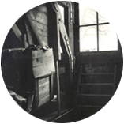

Desde julio de 1942 comenzaron a partir trenes hacia el Este cargados de judíos.
Margot recibió la orden de presentarse el 5 de julio de 1942 y al día siguiente la familia Frank se mudó al escondite que había preparado, donde permanecieron escondidos junto a otros cuatro judíos durante veinticinco meses.
La entrada al anexo estaba cubierta por la biblioteca.

El ático desde donde se podía observar el cielo.
“Miércoles, 03 de mayo de 1944.
(...)
el desayuno sólo consta de una taza de avena (...) para el almuerzo tuvimos ensalada cocida podrida. Ensalada cruda o cocida, espinacas..., ese es nuestro menú, no hay otra cosa, salvo las papas podridas: ¡un artificio delicioso!”
“Sábado, 27 de mayo de 1944.
(...)
Más de una vez me pregunto si, para todos nosotros, no habría valido más no ocultarnos y estar muertos a la hora presente, antes de pasar por todas estas calamidades, sobre todo por nuestros protectores, que, al menos, no estarían en peligro...”
“Que llegue el fin, aunque sea duro; al menos no sabremos si, a fin de cuentas, debemos vencer o perecer.